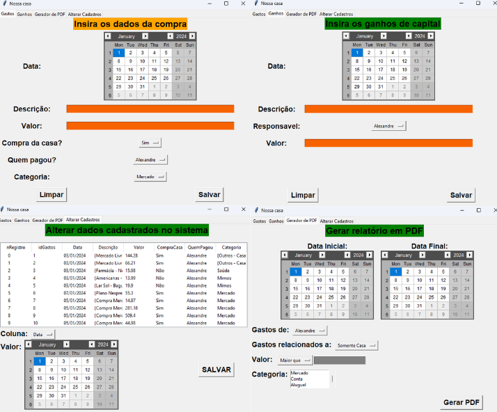
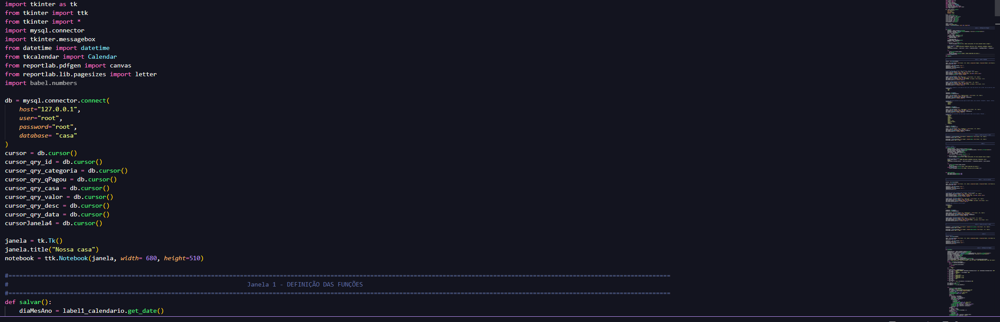
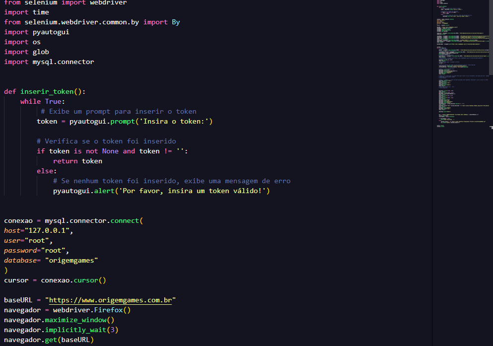

Nome: Alexandre Mazarin Bakanovas
Idade: 28 anos
Curso: Engenharia de Software
Semestre: 3º
RU: 4302492
Esta é a página inicial do trabalho da matéria 'Aplicações Web e Móveis'.
Como desafio, nos foi passado a criação deste curriculo no formato de uma página Web.
Nome: Alexandre Mazarin Bakanovas
Idade: 28 anos
Curso: Engenharia de Software
Semestre: 3º
RU: 4302492
Cursando graduação em Engenharia de Software pela faculdade UNINTER, com formação prévia como farmacêutico pela Universidade de São Paulo (USP). Profissional que gosta de trabalhar com diferentes projetos, impulsionado por aprender e solucionar desafios.
Apaixonado pela tecnologia desde criança, após minha formação em Farmácia, em 2021 (após 5 anos de curso), fui trabalhar na industria farmacêutica, onde pude ter mais contato com diversos equipamentos e softwares, o que reacendeu a minha paixão por este mundo. Após diversas conversas e pesquisas, decidi por entrar de cabeça nesse mundo. Hoje, após mais de 1 ano de curso, vejo que não errei em nenhuma escolha.
Lógica de Programação.
Conhecimentos básicos em HTML, CSS, Machine Learning, C, JavaScript e SQL.
Conhecimentos intermediários em SQL e Python.
Comunicação e organização.
Pró-atividade e dinamismo.
Adaptabilidade e Resiliência.
Treinamentos.
Inglês intermediário.
PowerBI intermediário.
Pacote Office Avançado.
Relacionamento com clientes.
Elaboração de documentos.
Bom relacionamento Interpessoal.
Nome: Alexandre Mazarin Bakanovas
Idade: 28 anos
Curso: Engenharia de Software
Semestre: 3º
RU: 4302492
Curso: Engenharia de Software
Início: Dezembro/2022
Término: Previsão para - Dezembro/2026
Curso: Farmácia e Bioquímica.
Início: Janeiro/2016
Término: Janeiro/2021
- Computação em Nuvem | AWS Discovery Day - 04 horas;
- Fundamentos Básicos do SAP S/4HANA - 08 horas;
- Microsoft Security, Compliance, and Identity Fundamentals (SC-900) - 08 horas;
- Ciência de dados com Python - 89 horas;
- CertiProf - Scrum Foundation;
- Banco de dados MySQL - 30 horas;
- Excel Básico ao Avançado - 42 horas;
- Power BI, do básico ao avançado - 10 horas;
Iniciação Científica (USP) - Projeto com bolsa FAPESP durante o período de 2017 à 2019.
Formação
Nome: Alexandre Mazarin Bakanovas
Idade: 28 anos
Curso: Engenharia de Software
Semestre: 3º
RU: 4302492
Neste projeto, foi desenvolvido uma aplicação em Python para a criação de um programa capaz de fazer o controle financeiro meu e de minha esposa.
Para isso, utilizei de conhecimentos adquiridos durante a graduação e, também, conhecimentos de cursos e de meu estágio.
Durante a criação do programa, foi necessário realizar diversas pesquisas pois, como minha esposa não conhece muito de tecnologia, o programa precisava de uma interface gráfica de fácil entendimento e manuseio. Para isso, utilizei a biblioteca 'tkinter', a qual cria uma interface gráfica que aceita diversos campos, calendários e botões.
Após definição da interface, foi necessário criar a lógica de gravação dos dados. Para isso, utilizei o banco de dados MySQL, criando as tabelas e relações pertinentes para o programa.
Aproveitando todos os dados gerados, decidi por criar também um dashboard utilizando a ferramenta da Microsoft, o PowerBI, onde pude criar diversos gráficos e medidas, o que torna a visualização dos dados muito mais fácil.
Para os próximos objetivos, visto que boa parte das funcionalidades já foram implementadas, seria a de sua implementação via Web. Hoje o fato de o programa só estar presente em meu computador dificulta a sua utilização, visto que nem sempre está disponível.
Imagem 1 - Telas do Programa
Imagem 2 - Início do Código
Este projeto está em desenvolvimento, dado a necessidade de realizar uma tarefa extremamente repetitiva e braçal. Por isso, surgiu a ideia de se criar um bot em Python que realiza todo o processo de download das informações e cadastro.
Para isso, utilizei de conhecimentos adquiridos durante a graduação e, também, conhecimentos de cursos e de meu estágio.
Durante a criação do programa, realizei algumas pesquisas e levantamente de possibilidades para se alcançar o objeto (o qual é a de cadastro das informações de venda de uma loja online de venda de cards). Após este período, pela minha facilidade e familiaridade com a linguagem de programação Python, decidi pela criação do Bot.
Com isso definido, bastou levantar as regras do negócio e começar a colocar em prática a criação do robô.
Finalizar a aplicação e, após contemplar todos os possíveis erros e possibilidades, escalar a aplicação para outros ambientes, como por exemplo o Web.
Imagem 3 - Início do Programa
Nome: Alexandre Mazarin Bakanovas
Idade: 28 anos
Curso: Engenharia de Software
Semestre: 3º
RU: 4302492